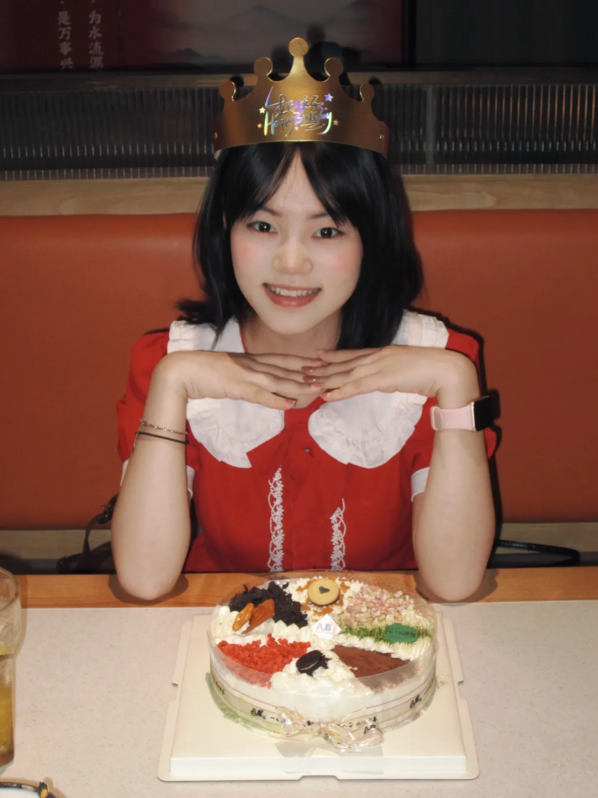
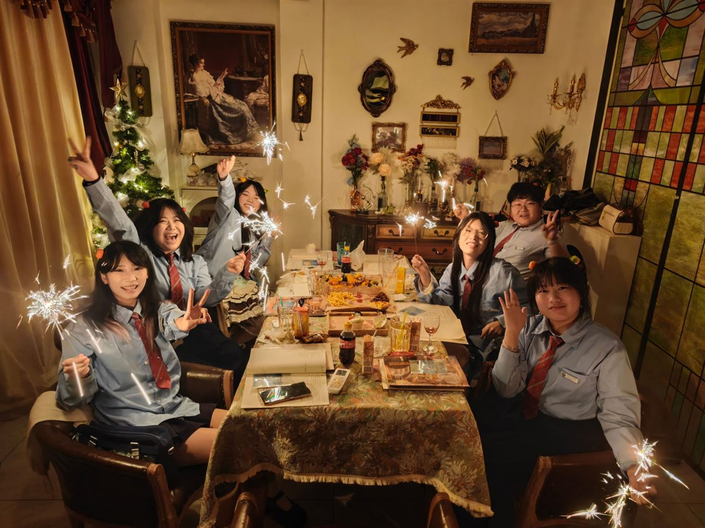
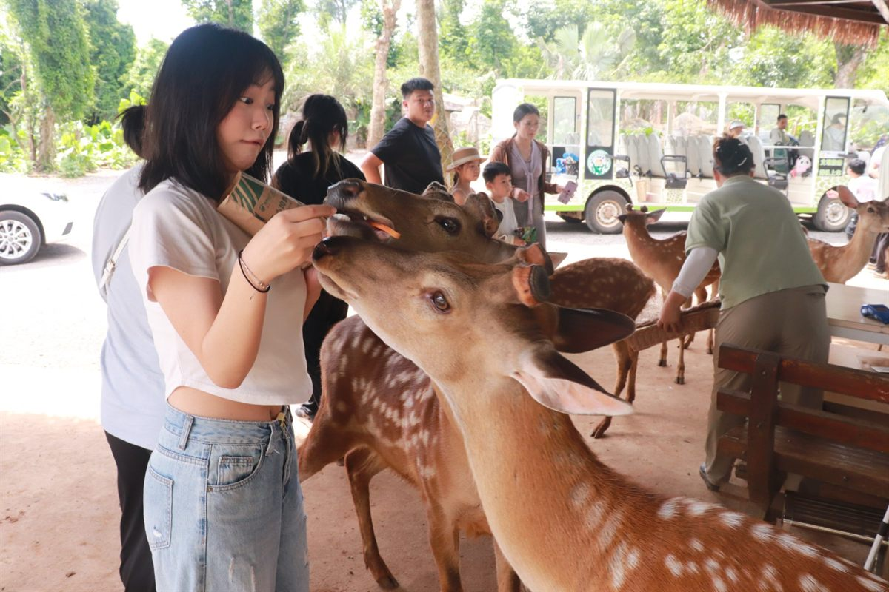
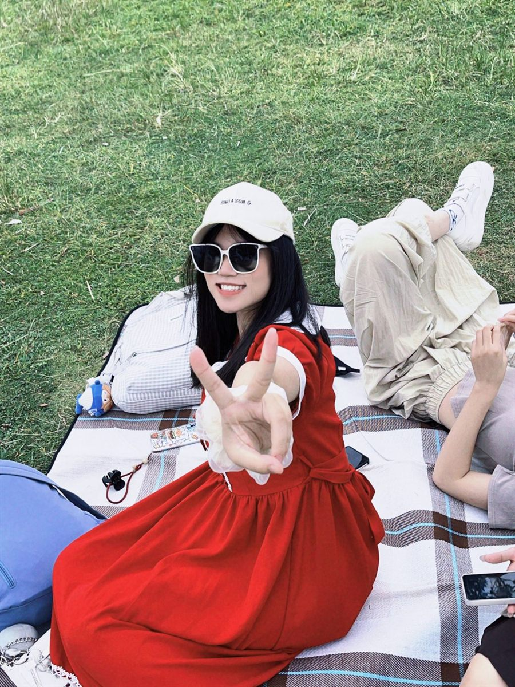
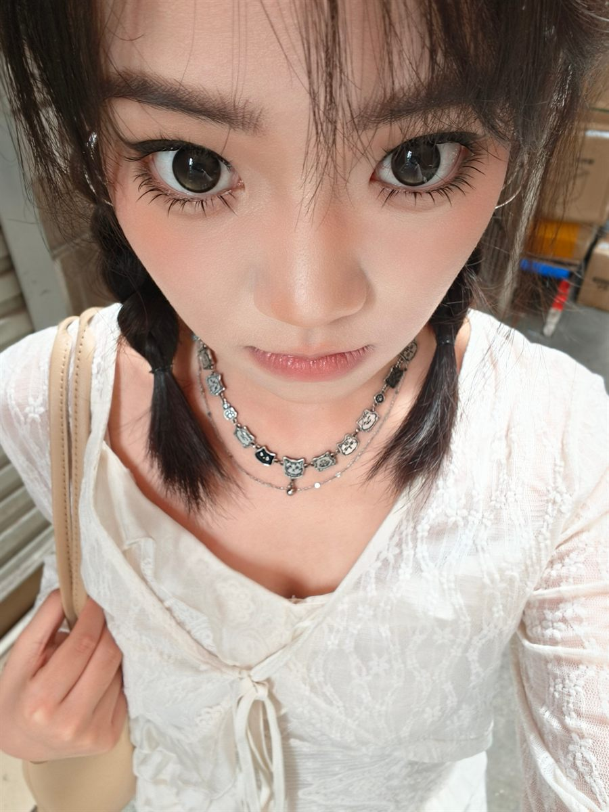
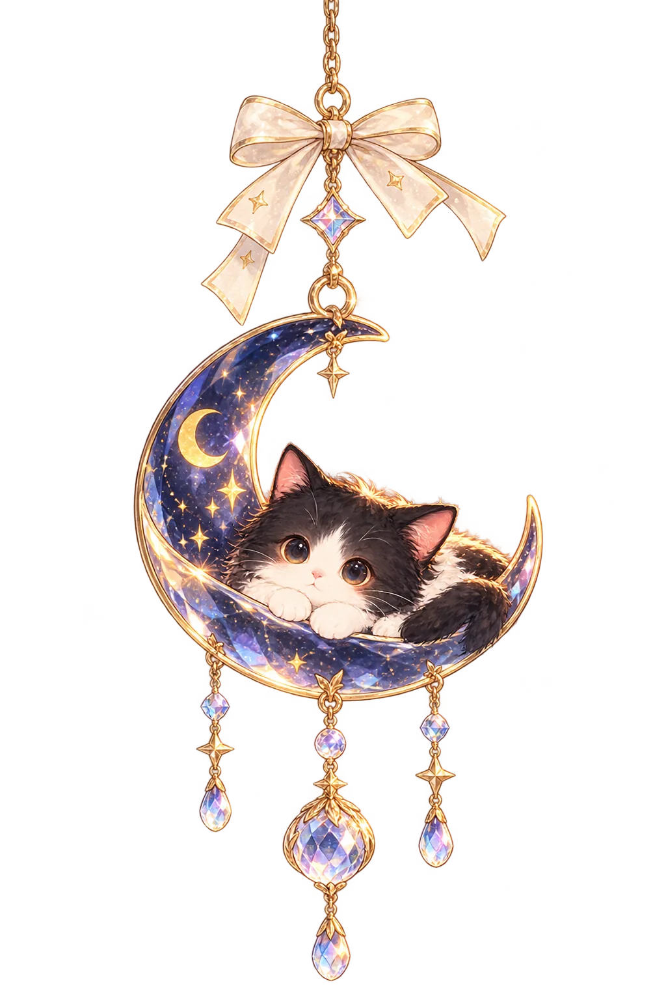

01 / ABOUT ME
你好，我是 Beata！
A Little More About Me
下面这些，大概是简历里放不下的部分。





第 1 / 5 张
点一下，或者往旁边甩
其实每次要认真介绍自己的时候，我都会有点不知道从哪里说起。
那就先从最简单的开始吧！湖北宜昌人，在海口读翻译专业，今年大四。至于兴趣爱好嘛……这个问题可能有点难回答，因为我好像对什么都挺感兴趣的哈哈哈哈。
我很喜欢去没去过的地方，认识不同的人，尝试一些以前从来没做过的事情。
这些年陆陆续续接触了不少东西。教过英语，做过新闻宣传，参加过志愿服务，也尝试过运营、AI和网页设计。有些事情最开始只是觉得有趣，想着要不试试看？结果做着做着，居然也慢慢摸索出了一点门道。
我真的很喜欢这种感觉。
就是原本觉得离自己很遥远的东西，突然有一天发现，哎？好像也没有那么遥不可及嘛！
不过比起做过多少事情，我好像更喜欢这些经历带给我的变化。
比如，我发现自己越来越喜欢和不同的人交流了。
我很喜欢听别人讲自己的故事。可能是一个完全不同的成长经历，也可能只是对某件小事的不同看法。有时候听着听着，就会突然意识到，原来同一件事情，还可以有这样的理解方式。
这种感觉很奇妙。
以前我可能会很自然地用自己的经验去判断一件事，现在却越来越觉得，每个人都有自己的处境和理由。很多事情并没有那么简单，也不一定非要分出一个绝对的对错。
当然啦，理解别人不代表我没有自己的想法。恰恰相反，我其实还挺喜欢和别人讨论问题的。尤其是遇到一些自己没想明白的事情，总想多听听不同的声音，再慢慢琢磨出自己的答案。
有时候想得太多，也会把自己绕进去哈哈哈哈。
除了这些，我还是一个很容易因为小事开心的人。
可能是学会了一个新技能，可能是努力做出来的东西得到了认可，也可能是和喜欢的人一起吃了一顿好吃的，或者某天突然发现，自己好像比以前更懂得怎么处理一些事情了。
我很喜欢这种一点一点变好的感觉。
当然，生活也不是每天都这么顺利。我也会有做不好的事情，会因为未来的不确定而焦虑，也会在某些时刻怀疑自己是不是走得太慢了。
但有意思的是，明明有那么多不确定的事情，我还是会忍不住期待明天。
期待认识新的人，去新的地方，学会新的东西，也期待某一天突然发现，原来自己又有了一些不一样的想法。
至于以后会变成什么样的人，我暂时还不知道。
以前总觉得，人是不是应该尽早找到一个明确的方向，然后坚定地走下去？但现在我越来越觉得，很多答案或许不是坐在那里想出来的，而是在一次次尝试、经历和选择中慢慢出现的。
所以目前的我，还是想多看看、多试试，也多听听这个世界上不同的声音。
毕竟还有那么多事情没经历过，那么多地方没去过，那么多有趣的人还没认识呢。
想想就觉得挺期待的！
01 — how I got here
这条线，绕了不少路 夜里看这条线，每一站都多一点别的
这不是一条提前画好的路线。很多联系，都是走过以后才看见的。 白天那一栏是简历上的写法，斜体那栏是当时真实的我。
2023 · 秋
🎓 来到海口，读翻译
海南师范大学外国语学院。第一次离家这么远，行李箱里塞了三本书和一个相机。
其实第一天晚上我在被子里哭了一会儿，第二天就好了。
2024 · 春
🛠 进了学院新闻宣传部门
从干事开始。写推文、写新闻稿、扛相机跑活动，第一次知道「把一件事讲清楚」有多难。
第一篇稿子被改了七遍。我当时觉得天要塌了。
2024 · 全年
🏆 博鳌亚洲论坛 · 第五届世界食学论坛 · 亚洲沙滩运动会
做志愿者。外语服务、媒体接待、采访摄影、现场协调。学会在很乱的时候先站稳。
最开心的不是见到谁，是散场之后和大家一起瘫在路边吃盒饭。
2024 · 冬
🌱 二十岁，写下一句话
「希望自己永远不要停止探索的热情。」当时只是随手写的，后来变成了我的一个坐标。
那时候我其实很慌，写这句话有点像给自己壮胆。
2025
💼 线上英语口语助教
服务三百多名学习者。课堂管理、学习反馈、家校沟通、课程协调，一天要说很多话。
有一阵子我说话说到嗓子哑，回宿舍一句话都不想说。
2025
💼 国际本科班 · 雅思助教（约 200 小时）
听说读写都教。备课、答疑、学习管理，给每个人排不一样的学习方案。
我最喜欢的部分不是讲课，是下课以后有人留下来问「老师我这样是不是也行」。
2025 – 2026
🎓 心理委员 · 党支部宣传委员 · 少儿英语一对一
一边组织，一边倾听，一边给小朋友上课。三件事看起来无关，其实都在练同一件事：怎么和人待在一起。
有人跟我说完话会说「谢谢你听我说」，那句谢谢我能记一年。
2026
💼 去广州，做用户运营实习
开始认真研究人为什么会点开一张图、一个标题、一个按钮。
我大概有一半的时间在怀疑自己会不会做不好，另一半时间在偷偷觉得自己还行。
2026 · 秋
🛠 北辰青年 AI 线上实习 · 然后做了这个网站
学工具、做知识管理、拆自己的经历。最后决定：与其等一个完美的作品集，不如先给自己造一个小窝。
这个网站是我第一次觉得「我好像真的可以做出来」的东西。
接下来 · ？
这一格先空着
我还不知道。但这次我不太着急填了。
02 — little things
一些小事，想到哪说到哪
正式的自我介绍就先到这里吧！接下来讲点乱七八糟的～
家有奶牛猫
叫沫沫！顺便说一句，这个网站的天黑开关就是她的专属出场方式。
榴莲披萨爱好者
尤其喜欢薄皮的！如果哪天心情不好，一顿好吃的真的可以哄好我一大半。
好奇心有点旺盛
经常突然对什么东西产生兴趣，然后开始疯狂研究。至于下一个坑是什么，我也不知道哈哈哈。
相册舍不得删
很喜欢拍照，也很喜欢翻旧照片。每次都觉得：天呐，原来那天已经过去这么久了！
快乐要分享！
遇到好玩的事情就很想讲给别人听。毕竟一个人开心已经很好了，两个人一起开心岂不是更赚！
偶尔也会想太多
有时候还没开始就已经担心了一百种可能。但最后通常还是会决定：算啦，先试试看！
经常跟自己说「再弄五分钟」，结果一不小心就折腾到了半夜。
想尝试的穿搭风格特别多，衣柜里的我和脑袋里想象的我，暂时还有一点距离哈哈哈。
有一个小小的愿望：带着相机去很多地方，拍拍照，认识新朋友，顺便吃点好吃的！
Psst... 还有一些没说完。
03 — PHOTO INDEX
一些瞬间，点开才看得见
先读到一句话，再看看它藏着哪张照片。鼠标经过就会出现，点一下可以把这一刻留下来。
only after dark
有些话，
我通常不会先说
如果认识久一点，大概就会慢慢发现。

有时候我好像还挺擅长察言观色的。
别人突然不说话了，我会想是不是发生了什么；别人心情不好，我会忍不住猜，是不是最近太累了，或者遇到了什么不顺心的事。
但轮到自己的时候，好像就没那么宽容了。
做得不够好，会觉得是不是自己能力不行；事情没处理好，第一反应经常是「我怎么又这样」。
我有时候觉得自己挺矛盾的。一边希望别人能够理解我，一边又不太习惯把自己的心情讲出来。
明明也会委屈，也会难过，甚至偶尔还挺需要别人哄一哄的，但真的有人问起来，又会条件反射地说一句：没事啦。
不过，最近好像有在慢慢改了。
我开始觉得，没必要每次都表现得很懂事，也不用什么事情都自己消化。偶尔笨拙一点、任性一点，好像也没什么关系。
毕竟我也还在长大嘛。
有些事情，白天忙着生活，晚上才有空慢慢想。就先写到这里吧。